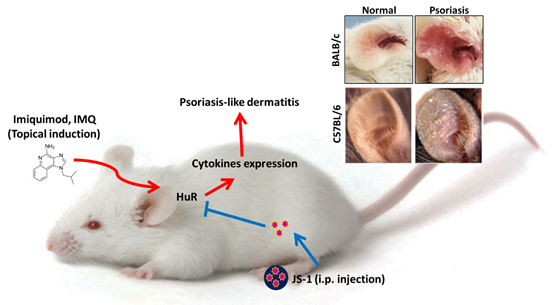

Idea
Human bodies are composed of millions of chemicals which regulate our physiological activities and homeostasis. Among these chemicals, one specific protein marks as the definitive factor due to its relations with inflammation, cancer, autoimmune disorders and numerous significant diseases. This protein is observed to be overexpressed in cytoplasm whenever these pathological changes occur, and it exerts its influence by stabilizing and controlling mRNA translation. This critical adaptor protein is called “Human antigen R (HuR)”.
As we learned the character of HuR in pathogenesis, we wondered the possibility to inhibit downstream signaling by interfering the binding between HuR and mRNA. To validate our idea, we designed a series of molecules in silicon via HotLig and Discovery Studio, and further examined their effect via in vitro fluorescent and immunoblotting experiments and their therapeutic efficacy via in vivo mice model targeting at a commonly seen, easily observed disease regulated by HuR, Psoriasis.
To start with, we substituted the specific HuR-binding mRNA fragment with peptides, which perform great potential in pharmaceutical applications owing to their high compatibility, specificity, low cytotoxicity, and a wide range of functional modifications. We screened through twenty amino acids and isolated one specialized type as modification target according to the result of HotLig (a binding affinity prediction software). Upon conjugating with a hydrophilic polymer, the ultimately created nanoparticle has higher permeability, stability and, transportability, which overcame the major setbacks of conventional small molecule and peptide drugs. It was soon named “JS-1”, the leading character in our play!
Then, we conducted an in vitro experiment to monitor the transporting pathway and the target site of JS-1 via bio-labeling fluorescence (Flu-8/TEM) to make sure it could be stably transported and exert its effect. In addition, we used immunoblotting to analyze the influence of JS-1 on expression of inflammatory protein iNOS and COX2, and its great efficacy was revealed!
Furthermore, JS-1 also performed well in vivo. We used Imiquimod-induced Psoriasis-like mice model and injected JS-1 intraperitoneally to evaluate its therapeutic effects (Figure. A-1). It turned out that JS-1 exhibits great efficacy. As a series of following data brought out more insights, we found that JS-1 could serve not only as a drug but also as a drug carrier!
 Figure. A-1. Imiquimod-induced dermatitis mice model.
The magnificence of JS-1 lies in its ability to bind to HuR protein which is usually regulated by the mRNA. This is the very first time that the RNA-binding protein, HuR, can be regulated by a peptide to treat HuR-related diseases.
Wanna dive deeper into the JS-1 design adventure with us? We are proud to present our research journey in the following. You can comprehend the properties of HuR in the “Overview - HuR introduction” section, while “Overview - JS-1 Design” section provides you with an abstract of how JS-1 was designed and examined. Don’t forget to check out the “Experiment” section for the detailed design process, and the “Simulation” section for molecules design and modeling elaboration. Last but not least, a click on the “Discussion” section opens up a mind-blowing exploration for our future perspective with us!
Let’s go meet JS1 and get ready to be amazed!